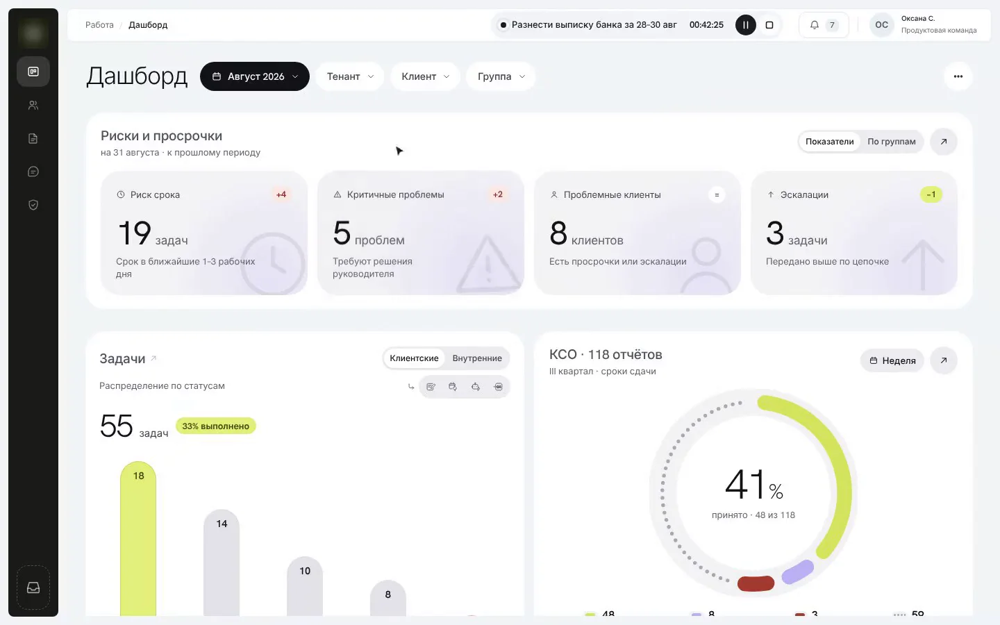
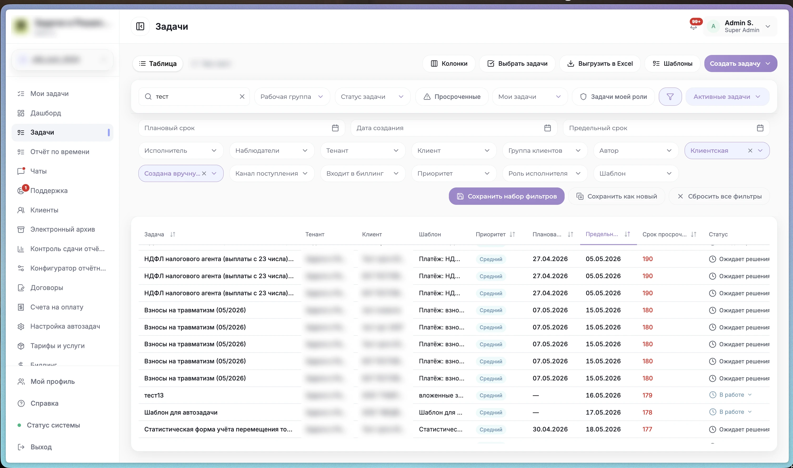
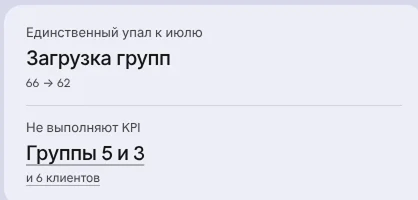
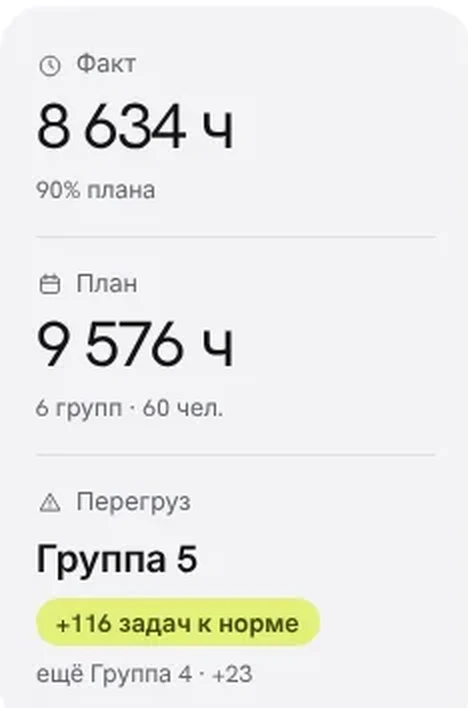
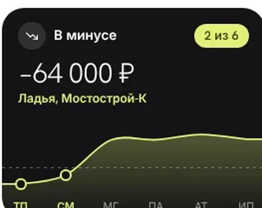

Платформа помогает бухгалтерским компаниям вести клиентов: задачи по каждому клиенту, сдачу отчётности, переписку и биллинг. У одного бухгалтера до тридцати фирм, и у каждой свой календарь платежей, уведомлений и деклараций.
Работа в платформе была собрана из задач: реестр, чек-лист, автозадачи по расписанию. Отчётность перед ведомствами жила в отдельном разделе со своим календарём.

Ведёт десятки клиентов и должен понимать, что сдать сегодня, что можно сделать заранее и кому ответить.
Следит за своими клиентами и бухгалтерами: кто что сдал, где не успевают.
Смотрит на все группы и всех клиентов сразу и хочет узнавать о проблемах до срока, а не после.
Дашборд руководителя: проблемы видны до срока, из каждого блока можно провалиться в список.



Я сама подготовила презентацию и показала её директору и клиентам. По итогам показа руководство согласовало переход на новую архитектуру, а виджеты обоих дашбордов мы перестроили: в кейсе показана уже новая версия. Сейчас раздел внедряется, поэтому цифр после запуска пока нет.
Архитектура раздела «Работа», навигация, дашборды двух ролей, чек-лист, канбан
Переход на новую архитектуру, после презентации директору и клиентам
Новый раздел в разработке
Пока нет: ждём запуска
Запас между двумя сроками и чек-лист должны показывать проблему до срока по закону.
Ведут ли бухгалтеры сдачу в чек-листе вместо своей таблицы.
Одна область вместо разрозненных разделов.